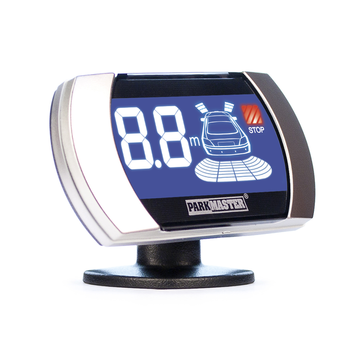

Система парковки ParkMaster 8-FJ-27-Black
Краткое описание товара
Система парковки — ультразвуковая система мониторинга расстояния. Она помогает вам
при движении назад, предупреждая о препятствиях позади вашего автомобиля посредством
светового, звукового и голосового оповещения (на русском
языке).
Характеристики товара
| Общие | |||||||
|---|---|---|---|---|---|---|---|
| № | Наименование | Значение | TM | ||||
| 1 | Рабочее напряжение | 10-15V | |||||
| 2 | Рабочая температура | от -40° до + 85°С | |||||
| 3 | Громкость бипера | 70-90 dB | |||||
| 3 | Зона обнаружения препятствия | 2,5 — 0,3 метра (для задних
датчиков), 1,0 — 0,3 метра (для передних датчиков) |
|||||
Особенности:
- 8 датчиков, контролирующих пространство спереди и позади автомобиля
- LCD индикатор с голубой подсветкой и металлическими вставками по краям индикатора
- Время отклика на обнаружение препятствия менее 0,08 сек
- Возможность регулировка громкости звукового предупреждения (с возможностью полного отключения)
- Возможность регулировка точки отсчета для автомобилей с запасным колесом, фаркопом и т. д. (вынос ноля)
- Возможность выбора голосового (на русском языке) или звукового оповещения о препятствии.
Полное описание товара
Система парковки — ультразвуковая система мониторинга расстояния. Она помогает вам
при движении назад, предупреждая о препятствиях позади вашего автомобиля посредством
светового, звукового и голосового оповещения (на русском
языке). Система Parkmaster 8FJ27 — это восьми датчиковая система парковки с LSD
дисплеем с синей подсветкой и металлическими вставками по краям индикатора, что
придает дополнительный шарм интерьеру
вашего автомобиля. Система имеет цифровую индикацию определения расстояния и время отклика
на обнаружение препятствия менее 0,08 сек. Система 8FJ27 — оснащена
функцией запоминания выносных элементов автомобиля
(для задних датчиков): фаркоп, внешнее запасное колесо и тд. Система парковки способна
работать в широком диапазоне температур от -40° до + 85°С.